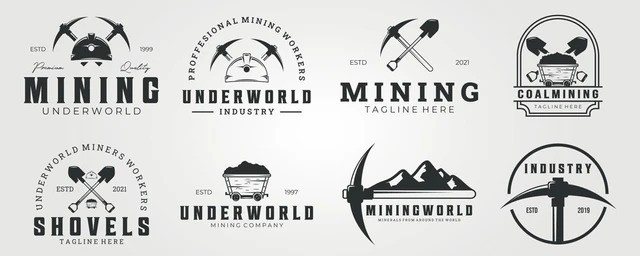

From raw ore to valuable mineral concentrates

Learn about the companies that drive innovation, mineral production and sustainable mining practices worldwide. These organizations operate some of the largest mines and mineral processing plants on Earth.
This educational platform provides information about mining, mineral processing plants, equipment, global mining operations, and career opportunities related to the mining industry.
Plans and supervises mineral extraction activities.
Work Areas:
Open-pit mines, underground mines and mine planning departments.
Optimizes mineral processing operations.
Work Areas:
Crushing, grinding, flotation, thickening and filtration plants.
Studies mineral deposits and evaluates resources.
Work Areas:
Exploration projects and geological departments.
Operates and monitors mineral processing equipment.
Work Areas:
Crushers, mills, flotation cells, thickeners and filters.
Ensures equipment reliability and operational efficiency.
Work Areas:
Mechanical, electrical and plant maintenance departments.
Protects the environment and promotes sustainability.
Work Areas:
Tailings facilities, water treatment and environmental monitoring.
Visit the Plant Process section to learn about concentrator plants, or explore Global Mines to discover some of the most important mining operations in the world.